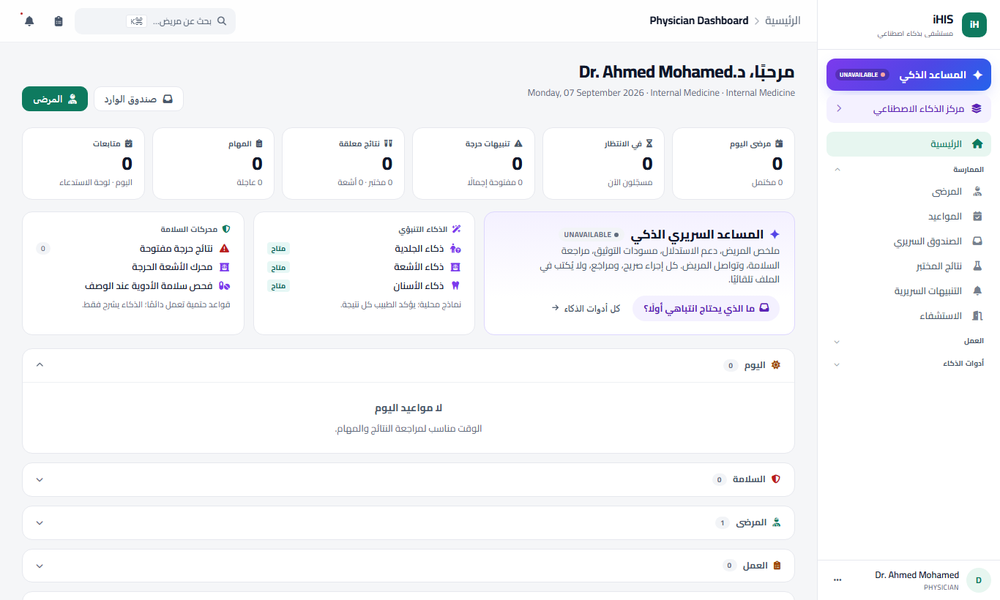
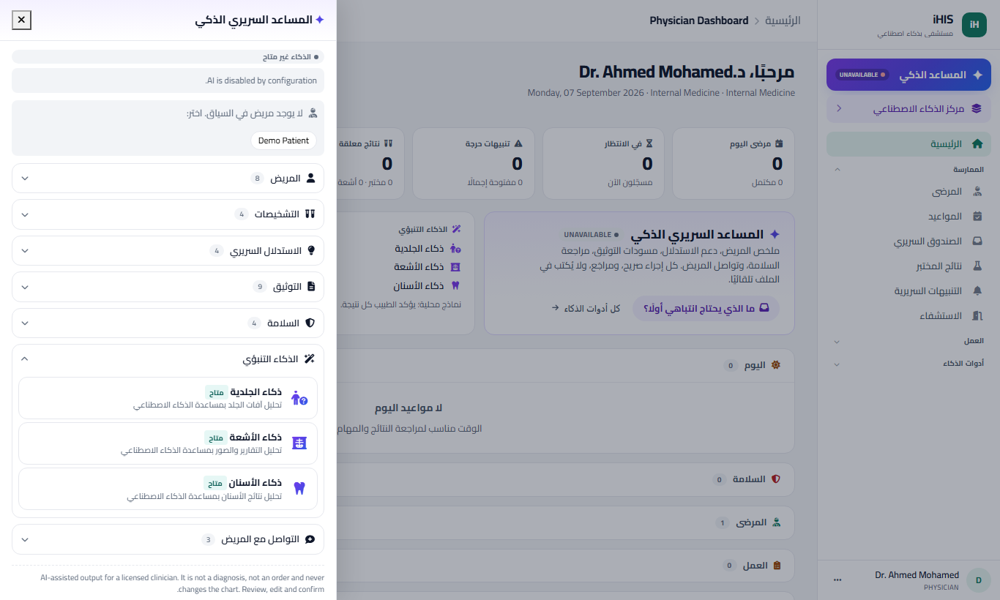
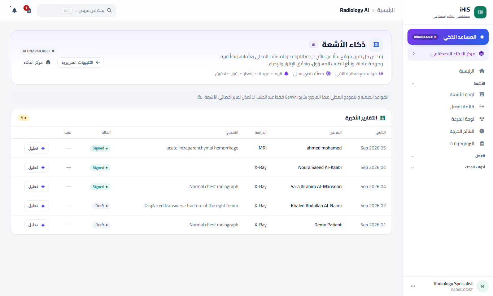
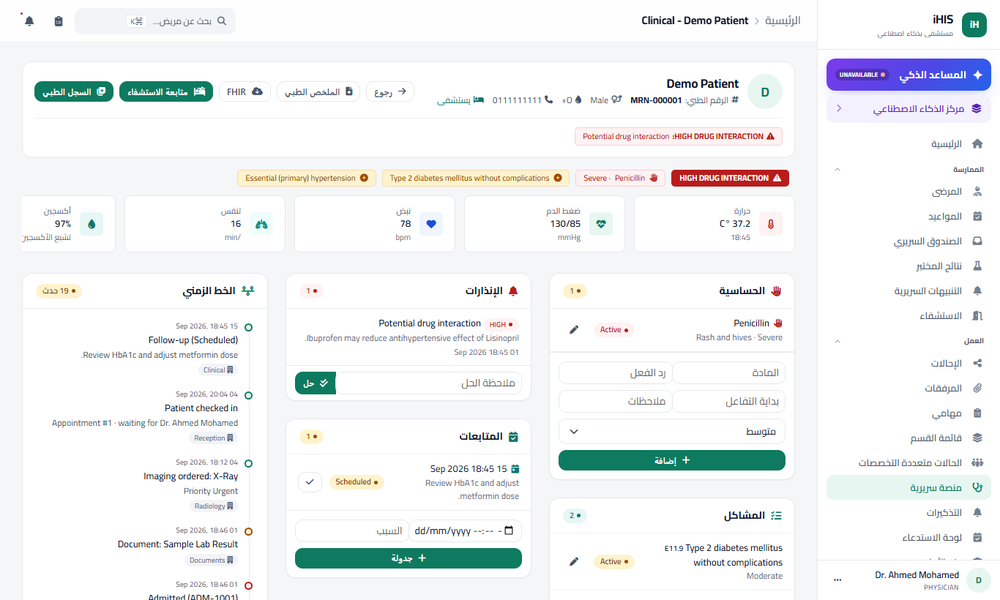
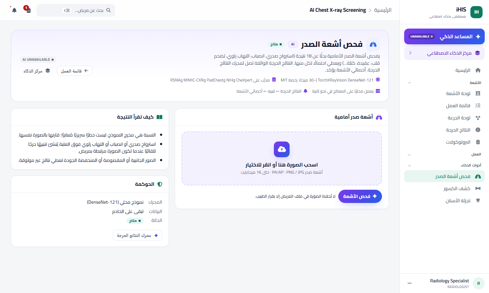
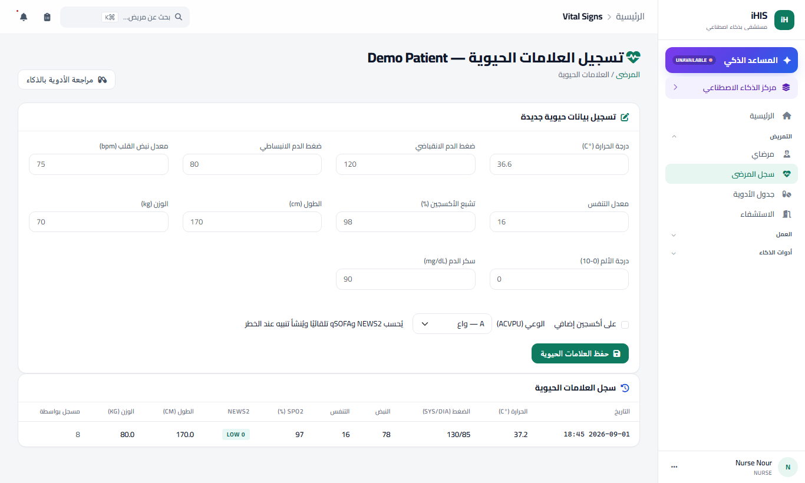
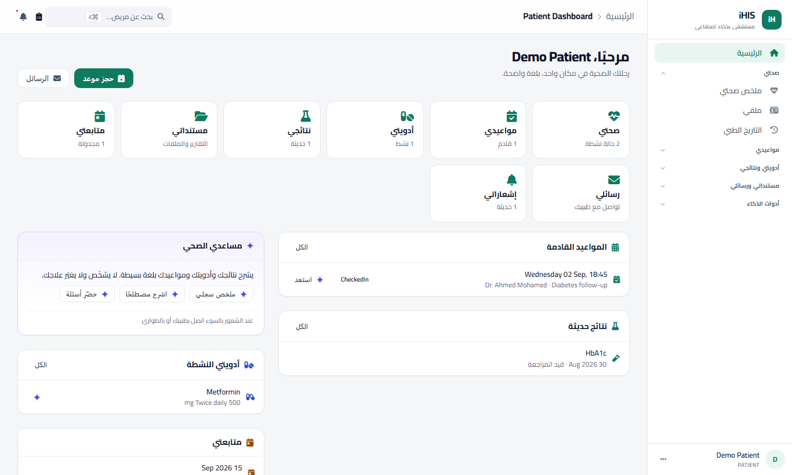
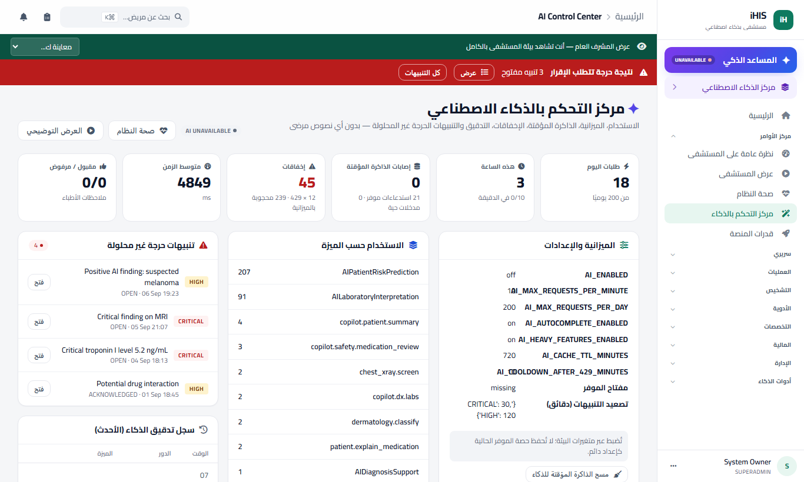

مستشفى واحد متصل، بمساعد سريري ذكي في كل خطوة، ونماذج تنبؤية محلية، ومحركات سلامة حتمية. الطبيب يقرر دائمًا.
الطبيب يقرأ عشرات النتائج، الصيدلي يفحص التداخلات يدويًا، والنتيجة الحرجة قد تنتظر في صندوق بريد.
10–15 دقيقة لكل زيارة تُكتب يدويًا، ولا مساعدة في التشخيص التفريقي أو الترميز.
الحساسية والتداخلات تعتمد على ذاكرة الطبيب وقوائم صغيرة. النتائج الحرجة بلا تصعيد مضمون.
نماذج الذكاء الطبية موجودة، لكنها خارج سير العمل، بلا حوكمة ولا تدقيق ولا مسؤولية واضحة.
القواعد الحتمية هي المرجع · الذكاء يشرح ويلخّص ويقترح · الطبيب يقرر · كل مخرج مُعلَّم ومُدقَّق





| النموذج | الحجم | ما يفعله |
|---|---|---|
| أشعة الصدر — DenseNet-121 | 29 ميجا | 18 نتيجة، النتائج الحرجة ← تنبيه |
| الكسور — YOLOv8 | 6 ميجا | يعلّم مناطق الكسر المحتملة |
| الجلدية — ResNet-50 + EfficientNet | ~200 ميجا | نيوس/ميلانوما + Grad-CAM + مراجعة الطبيب |
| الأسنان — U-Net | ~90 ميجا | تجزئة الأسنان البانورامية |
| الإملاء — faster-whisper | 75 ميجا | كلام ← نص محليًا |
| الغياب — انحدار لوجستي | — | يتدرّب على بيانات المستشفى نفسه |
قواعد مع معالجة النفي + مصنّف نصي محلي على كل تقرير موقّع؛ تصعيد تلقائي بعد 30 دقيقة للحرج.
حساسية وتفاعل متصالب وتداخلات من دليل المستشفى ومرجع DDInter (160 ألف زوج) لحظة الوصف.
NEWS2 عند كل قياس، qSOFA للإنتان، LACE لخطر إعادة الدخول عند الخروج. معيارية وقابلة للتفسير.



شكرًا — التجربة الحية جاهزة على الجهاز المحلي.